Case 01 · Concept · AI product film
DEW
They can’t survive moisture.
Format
1:08 · 16:9 · 4K · 30 fps
Mixed to −14 LUFS
Role
Concept, script, previs, keyframes, generation, edit, grade, sound
Tools
Blender, GPT Image 2, Nano Banana, Seedance 2.0, ElevenLabs, Real-ESRGAN, After Effects
Brand
Invented for this film. A concept, not a client job
Dry skin, played as a creature feature.
DEW is an invented moisturiser, and the brief I gave myself was simple: make dryness something you can see.
So it became a cast of tiny creatures made of dry sand and cracked clay that live on your skin — and fall apart the moment they touch water. The whole film is that one rule played out, from the problem to the payoff: they can’t survive moisture.
A problem, a stranger, a cure, and a callback.
A · Café
Creatures on her face. Her friend can’t unsee them.
0:00–0:14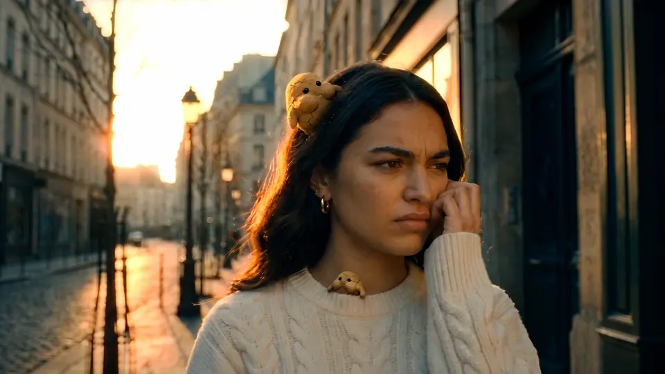
B · Street
They follow her outside.
0:14–0:23C · Encounter
A stranger: “I had them too.” A jar changes hands.
0:23–0:31D · Application
One touch of cream. They crumble. She opens her eyes.
0:31–0:41P · Inside the jar
Ice, glacier water, cold light.
0:41–0:53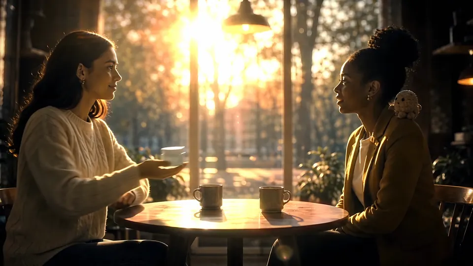
E · Café, later
She’s glowing. Then one climbs onto her friend’s shoulder.
0:53–1:08Every shot is blocked before it’s generated.
Each scene starts as a grey Blender blockout: real lenses from 35 to 100 mm, the camera move of every shot, where everyone stands and the frame they move on.
The blockout render becomes the motion reference for the video model. The generation follows a plan instead of inventing one — and the cut is decided here, not later.
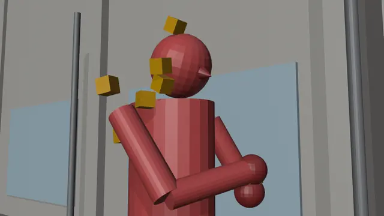
Fingers into the cream
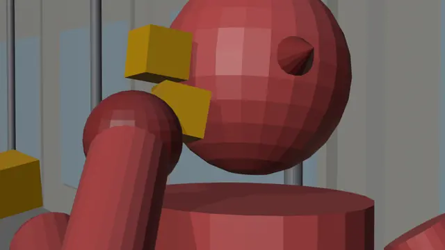
Eyes closed, a deep breath
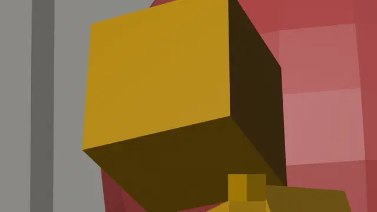
The cheek creature crumbles
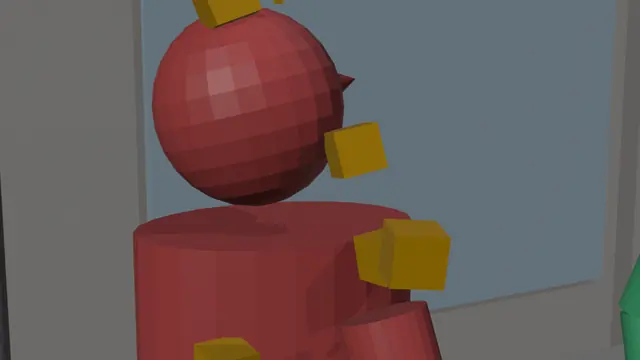
All of them crumble
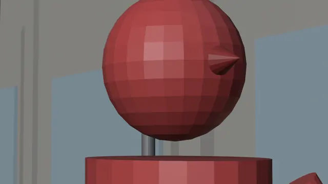
Eyes open
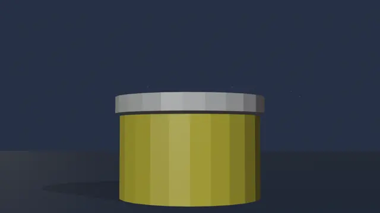
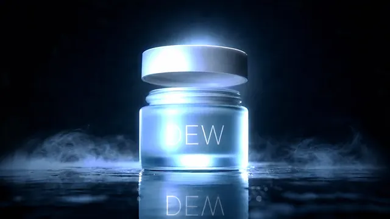
The lid unscrews itself
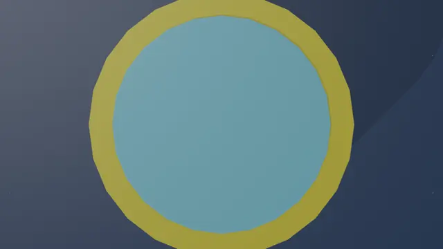
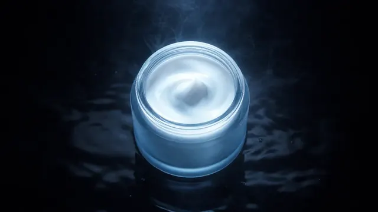
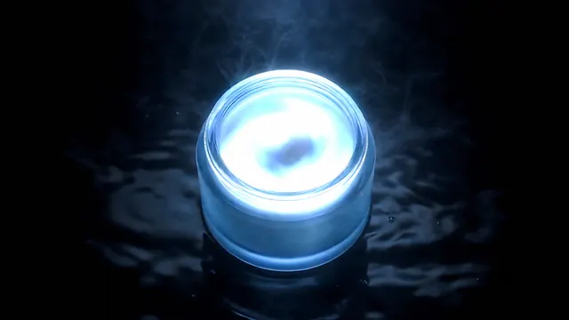
Cream glows from above
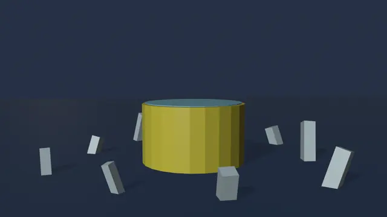
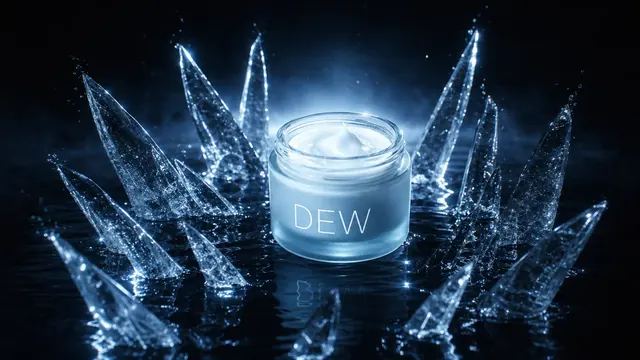
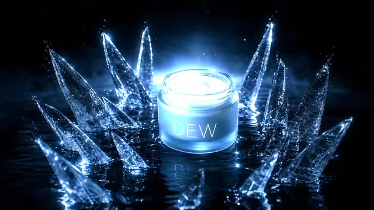
Glacier crystals
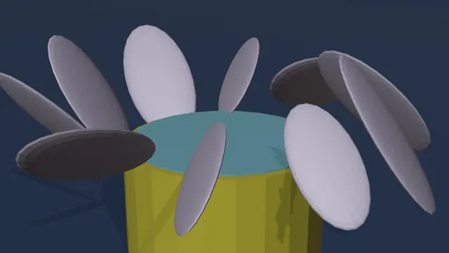
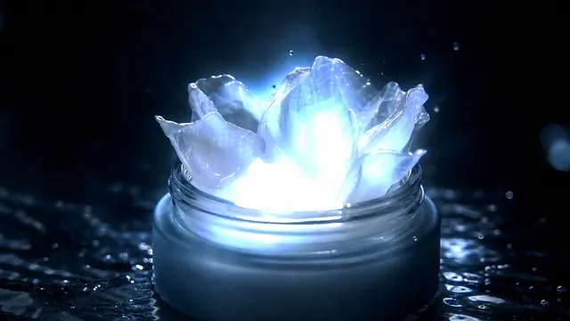
Snow petals
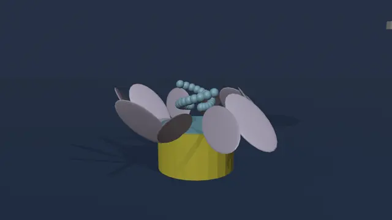
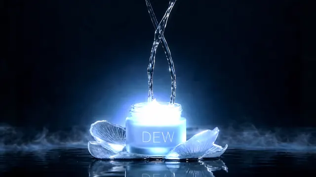
Water ribbons, packshot
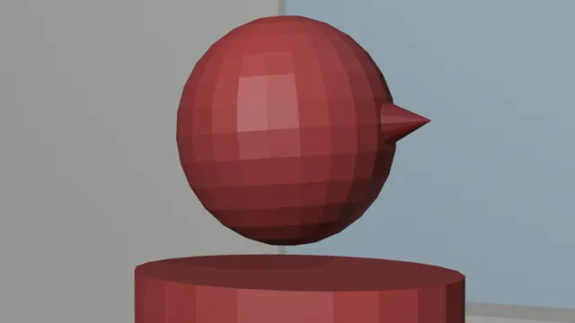
Radiant, laughing
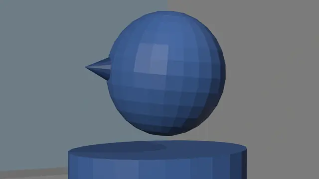
Her friend laughs along
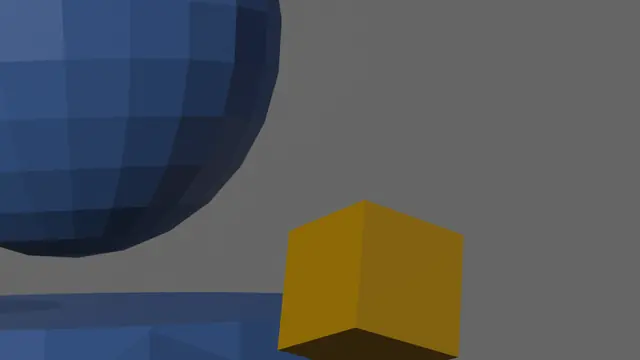
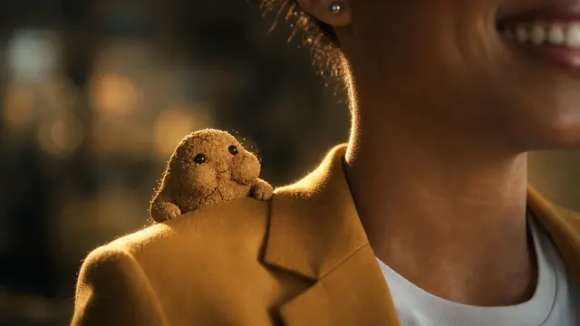
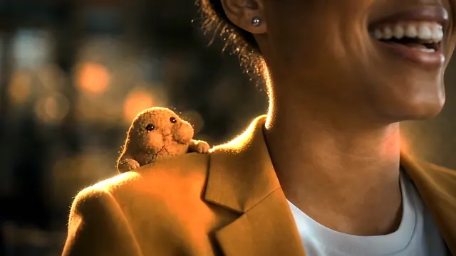
Something climbs out
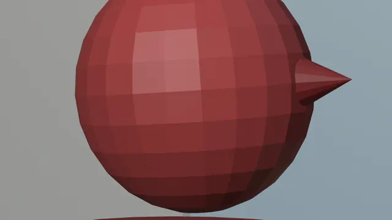
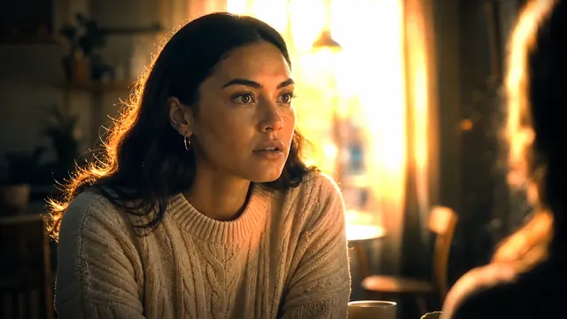
She notices
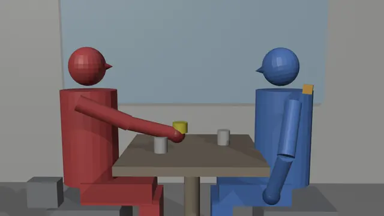
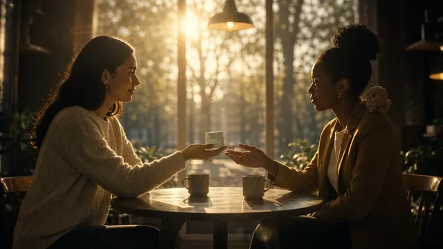
The jar, passed on
The same faces in every shot.
The heroine, her friend, the stranger, the creature, the jar and both locations are designed once, as reference sheets. Every keyframe is built from these sheets plus the blockout frame — that is what keeps her the same woman from the first shot to the last.
8 sheets
One cast and one world for all 31 keyframes and six scenes.
31 keyframes, approved before anything moved.
One frame per shot, made with GPT Image 2 and Nano Banana. Composition comes from the blockout, faces and wardrobe from the sheets, and the light from one rule for the whole film: low golden backlight, haze, deep blacks — warm highlights, cool shadows. Click any frame to open it.
A
Café · 6 shots · Nano BananaB
Street · 5 shots · Nano BananaC
Encounter · 5 shots · Nano BananaD
Application · 5 shots · GPT Image 2P
Inside the jar · 5 shots · GPT Image 2E
Café, later · 5 shots · GPT Image 2Prompts written like a shot list.
One generation per scene: five shots cut inside a single take, each with its own camera move and an end state. Lens, light direction, who sits where and what must never change are written out every time — the model doesn’t direct, it executes.
A frame from a feature film, not a stock photo. Use the grey blockout image only for camera position and composition. Close-up of the young woman from her character sheet (dark wavy shoulder-length hair, cream cable-knit sweater, gold hoop earrings), seated on the LEFT side of the cafe table from the cafe image, facing right, never looking into the lens. Her laugh has just stopped: the smile drops, her eyes widen and her eyebrows lift, surprised and a little worried, as she stares at something on her friend’s shoulder off-screen right. Her skin is smooth, dewy and luminous; no creatures on her. 85mm lens at f/1.4, very shallow depth of field, creamy bokeh. Lighting: late-afternoon low sun through the big window behind her, strong warm golden backlight and rim light glowing in her hair and on the edge of her cheek, the front of her face in soft shadow with a gentle bounce, the room falls into deep warm darkness, visible haze, pendant lamps glowing as warm out-of-focus bokeh, contrast about 6 to 1, deep blacks. Colour: amber highlights, cool teal-green shadows, natural skin tones, filmic contrast, subtle halation, fine 35mm film grain. No text, no watermark.
- Blocking — screen side is fixed in every prompt, so the eyelines cut together.
- Performance — behaviour, not emotion: what the face does, and where it looks.
- Story rule — after the cream, no creature may appear on her again.
- Lens — the focal length from the blockout, with its depth of field.
- Light — one direction for the whole café, so scenes A and E match.
One continuous 11-second scene of exactly five shots in this exact order. Each shot appears once, no repeated shots, no extra shots. … The camera is never static: every shot has its own slow, smooth camera move, and every cut is motivated by a look or a movement. Follow the reference video for timing and movement. [00:00-00:02] Shot 1 = image 1, close-up, the camera slowly pushes in: the young woman, radiant and happy, laughs and says: "Honestly, I feel like a new person." [00:02-00:04] Shot 2 = image 2, close-up, the camera slowly pushes in: the friend laughs along and says: "You look like one!" [00:04-00:05.5] Shot 3 = image 3, extreme close-up, the camera creeps closer: from behind the friend’s shoulder a tiny sand creature climbs up onto her blazer and peeks out; she keeps laughing, unaware. [00:05.5-00:07.5] Shot 4 = image 4, close-up, a quick push-in on her face: the young woman’s smile drops, her eyes widen for a moment … [00:07.5-00:11] Shot 5 = image 5, wide two-shot, the camera slowly drifts back: she takes the small DEW jar out of her bag and holds it out across the table … Avoid: any creature on the young woman, swapping the women’s sides, changing faces or clothes, looking into the lens, repeating a shot.
- Timestamps — five shots and their cuts placed to the half-second.
- Motion reference — the Blender previs drives timing and camera.
- Keyframes — images 1–5 are the approved frames, 6–9 the sheets.
- Sound — voices only; music, ambience and effects come later, in the mix.
Finished in After Effects, not in the generator.
The master comp in After Effects: 26 layers, every one named for what it is — a grade per scene, the transition into the jar with its keyframes, the time remap that holds the last shot under the end card. The project opens and edits by hand; the film is rendered from it, not stitched outside.
24 → 30 fps
Smooth motion, clean cuts
Pixel Motion conform to 30 fps. It blends a frame at every cut inside a generated take: 25 cuts, 26 blended frames, each one replaced with a clean frame.
Grade
Six scenes, one film
A grade layer per scene: deeper blacks on the street, calmer saturation during the cream, open highlights in the product world, and café A matched to café E.
0:40.9
Into the jar
A push into her light, a glacier-white flash and a zoom blur that lands on ice — one move that carries the cut into the product world.
Ending
The handover holds
The last shot is time-remapped: half speed as the jar is offered, then held, while the blur builds under the end card.
End card
Logo on the final chord
DEW and the line animate in their own precomp, words set on one baseline and timed to the last chord of the score.
Sound
Stems inside the project
Voices, music, ambience and effects sit in the comp as separate stems next to the master mix, ready to rebalance.
From 720p takes to a 4K master.
The video model delivers 720p. Every take is upscaled locally with Real-ESRGAN, blended 60/40 with the original so skin keeps its texture instead of turning to wax, then graded and given a fine grain in After Effects. Drag the line to compare.
1:1 crop of the 4K frame · the take enlarged with plain bicubic
Full frame · grade, upscale and grain
The music changes when the story does.
The takes come out with voices only, so the sound is built from scratch. The three voices are recast with ElevenLabs Voice Changer, which keeps the original timing, so the lips stay in sync.
The score is two cues: a dry, itchy one for the problem that thins out when the stranger appears and dies with the last creature — and a bright one that bursts in the moment her eyes open. When a creature turns up again at the end, the problem theme comes back for one phrase.
- 1The stranger appears — the problem cue thins out
- 2The last creature crumbles — the cue dies with it
- 3Her eyes open — the bright cue bursts in
- 4A creature on her friend — the problem theme returns
- 5The final chord lands on the logo
Voices recast
Music cues
Sound effects
LUFS master
Blender
Previs: blocking, lenses and camera moves for every shot.
GPT Image 2 · Nano Banana
Reference sheets and the 31 keyframes.
Seedance 2.0
Video: one take per scene, guided by the previs.
ElevenLabs
Voice Changer for the cast, music, ambience and sound effects.
Real-ESRGAN
Local upscale of every take from 720p to 4K.
After Effects
Edit, 30 fps conform, grade, transitions and the end card.
Contact
Want a film like this for your product?